(Adapted from the Seurat PBMC 3k Tutorial)
Seurat should be installedlibrary(eda)
update_eda()
library(Seurat)
library(tidyverse)
library(Matrix)However, for efficiency, scRNA-seq data is stored in sparse matrix objects. An example data set consisting of 2,700 peripheral blood mononuclear cells (PMBCs) is included in the eda package.
# load the path to the example data
pbmc_10x <- system.file("extdata", "pbmc_gene_bc_matrices", "hg19", package = "eda")
# read the example data
pbmc.data <- Read10X(pbmc_10x)
# print the size of the sparse matrix
object.size(x = pbmc.data) %>%
format(units = "auto")
#> [1] "36.9 Mb"
# print the size of the full matrix
object.size(as.matrix(x = pbmc.data)) %>%
format(units = "auto")
#> [1] "676.4 Mb"First, we’ll generate a Seurat object with the raw count data, keeping all genes that are expressed in at least 3 cells and all cells with at least 200 detectable genes.
pbmc <- CreateSeuratObject(raw.data = pbmc.data,
min.cells = 3,
min.genes = 200,
project = "10x_PBMC")scRNA-seq data sets are further filtered to remove cells with too few detectable genes, cells with clear outlier numbers of detectable genes (likely doublets) and cells with high proportions of mitochondrial RNAs (likely dead cells).
# Calculate percent of reads that are mitochondrial
mito.genes <- grep(pattern = "^MT-",
x = rownames(x = pbmc@data),
value = TRUE)
percent.mito <- Matrix::colSums(pbmc@raw.data[mito.genes, ])/Matrix::colSums(pbmc@raw.data)
# Add percent.mite as metadata to Seurat object
pbmc <- AddMetaData(object = pbmc,
metadata = percent.mito,
col.name = "percent.mito")
# Plot number of genes, number of UMIs and percent.mito
VlnPlot(object = pbmc,
features.plot = c("nGene", "nUMI", "percent.mito"),
nCol = 3)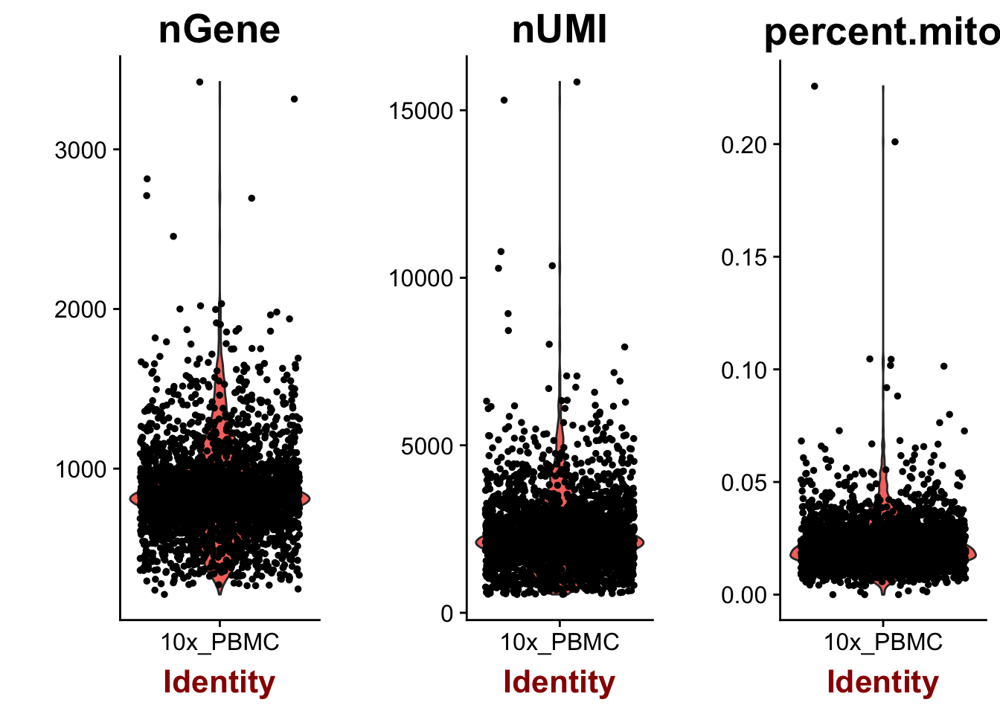
Outliers can be identified visually using the GenePlot function:
GenePlot(object = pbmc, gene1 = "nUMI", gene2 = "percent.mito")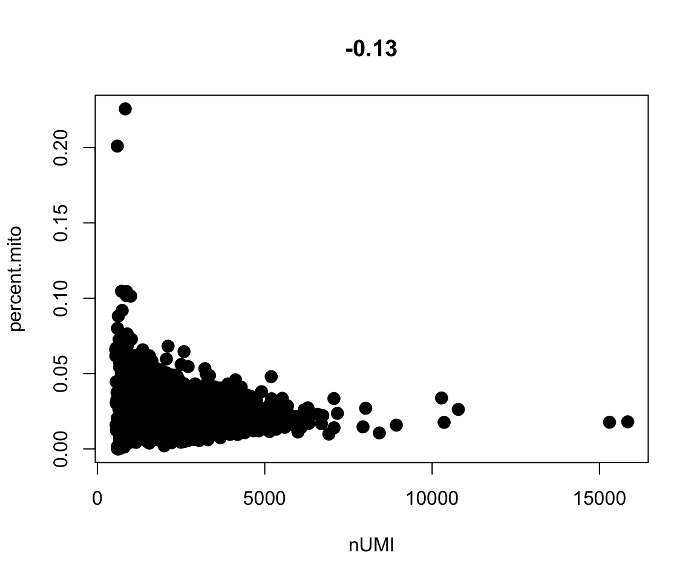
GenePlot(object = pbmc, gene1 = "nUMI", gene2 = "nGene")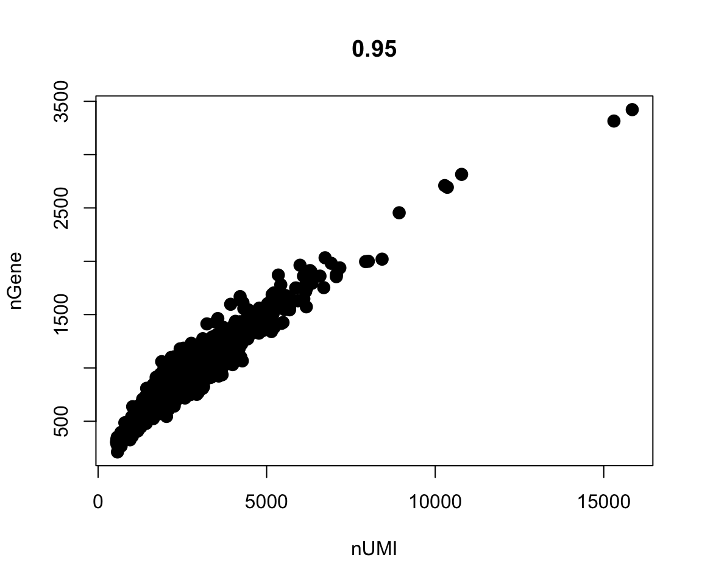
Finally, we can filter the pbmc object with FilterCells:
pbmc <- FilterCells(object = pbmc,
subset.names = c("nGene", "percent.mito"),
low.thresholds = c(200, -Inf),
high.thresholds = c(2500, 0.05))After filtering, we need to normalize gene expression across cells with the NormalizeData function. This function normalizes gene expression measurements by per-cell total expression, multiplies the result by an arbitrary value (10,000 here) and log transforms the result.
pbmc <- NormalizeData(object = pbmc,
normalization.method = "LogNormalize",
scale.factor = 10000)Next, we identify variable genes using a mean-dispersion plot to mark visual outliers.
pbmc <- FindVariableGenes(object = pbmc,
mean.function = ExpMean,
dispersion.function = LogVMR,
x.low.cutoff = 0.0125,
x.high.cutoff = 3,
y.cutoff = 0.5)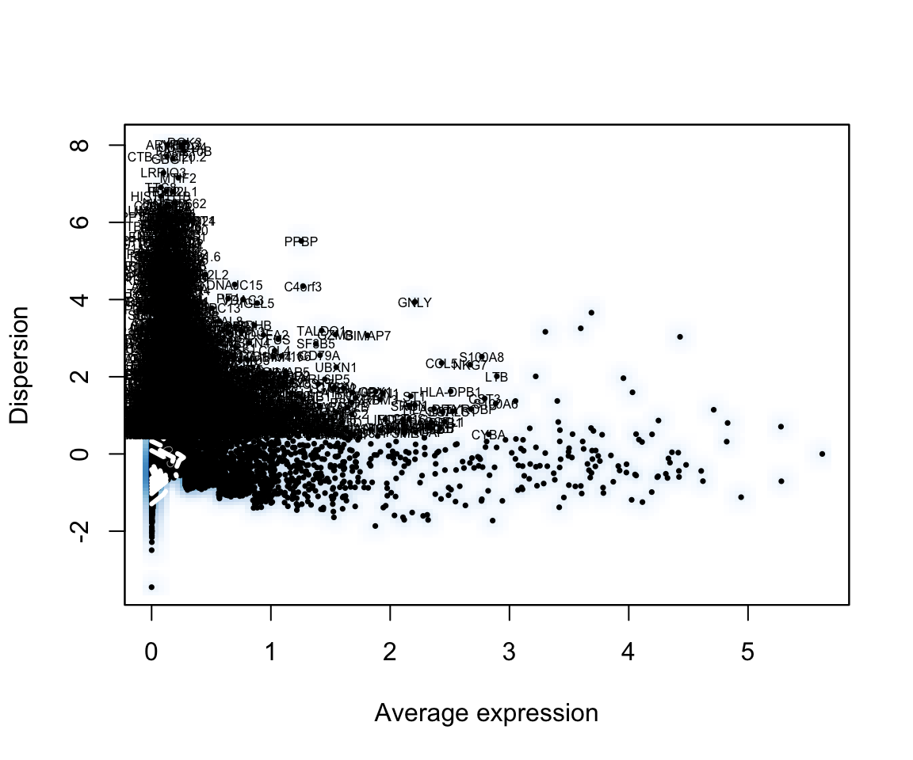
length(x = pbmc@var.genes)
#> [1] 1838Single cell data sets contain various types of ‘uninteresting’ variation. These can include technical noise, batch effects and confounding biological variation (such as cell cycle stage). We can regress these signals out of the analysis using ScaleData.
pbmc <- ScaleData(object = pbmc,
vars.to.regress = c("nUMI", "percent.mito"))As in our bulk RNA-seq example, we need a way to project highly multidimensional data onto a 2D plane. PCA alone is insufficient to capture the variation in these data due to the complexity, so we’ll introduce a new method: t-distributed stochastic neighbor embedding (tSNE). A useful interactive tool to help you understand tSNE can be found here. First, we’ll calculate the principle components (used by the clustering and tSNE algorithms):
pbmc <- RunPCA(object = pbmc,
pc.genes = pbmc@var.genes,
do.print = TRUE,
pcs.print = 1:5,
genes.print = 5)
#> [1] "PC1"
#> [1] "CST3" "TYROBP" "FCN1" "LST1" "AIF1"
#> [1] ""
#> [1] "PTPRCAP" "IL32" "LTB" "CD2" "CTSW"
#> [1] ""
#> [1] ""
#> [1] "PC2"
#> [1] "NKG7" "GZMB" "PRF1" "CST7" "GZMA"
#> [1] ""
#> [1] "CD79A" "MS4A1" "HLA-DQA1" "TCL1A" "HLA-DQB1"
#> [1] ""
#> [1] ""
#> [1] "PC3"
#> [1] "PF4" "PPBP" "SDPR" "SPARC" "GNG11"
#> [1] ""
#> [1] "CYBA" "HLA-DPA1" "HLA-DPB1" "HLA-DRB1" "CD37"
#> [1] ""
#> [1] ""
#> [1] "PC4"
#> [1] "IL32" "GIMAP7" "AQP3" "FYB" "MAL"
#> [1] ""
#> [1] "CD79A" "HLA-DQA1" "CD79B" "MS4A1" "HLA-DQB1"
#> [1] ""
#> [1] ""
#> [1] "PC5"
#> [1] "FCGR3A" "CTD-2006K23.1" "IFITM3" "ABI3"
#> [5] "CEBPB"
#> [1] ""
#> [1] "FCER1A" "LGALS2" "MS4A6A" "S100A8" "CLEC10A"
#> [1] ""
#> [1] ""Next, we’ll generate a PCA plot.
PCAPlot(object = pbmc,
dim.1 = 1,
dim.2 = 2)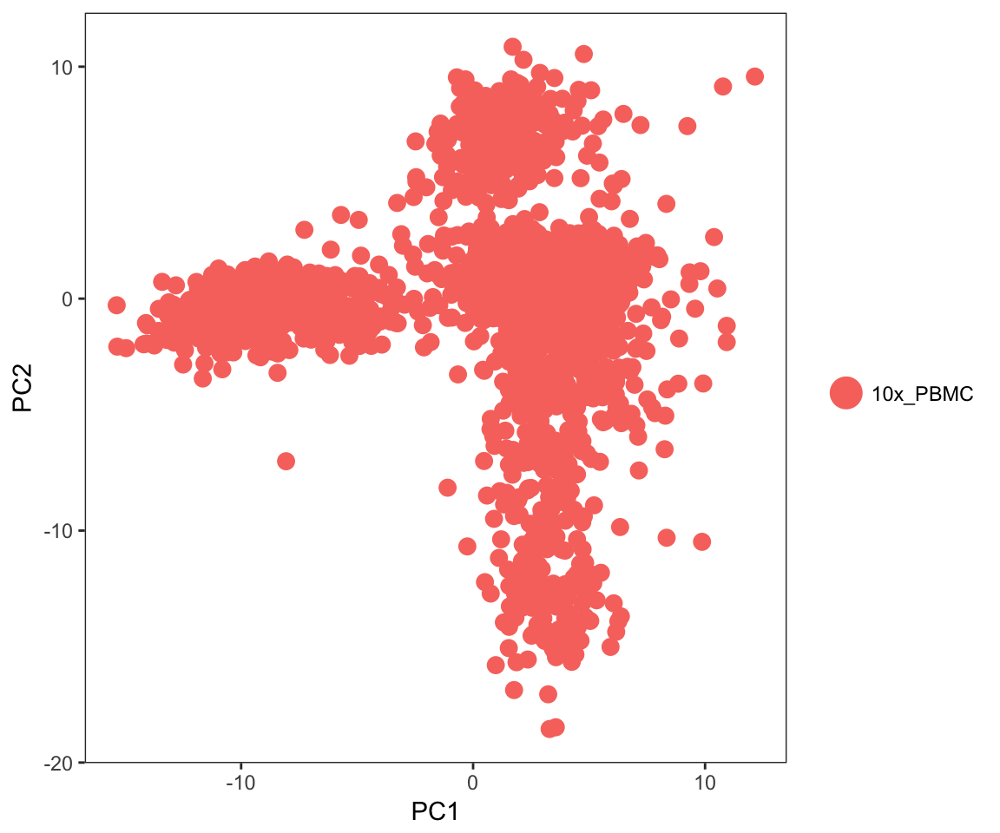
Multiple subpopulations are clearly visible in this plot, but as we’ll see later, there is even more interesting variation present in these data. However, in order to use the clustering and tSNE algorithms, we’ll need to determine how many PCs comprise the ‘true dimensionality’ of the data set. One approach is to view a heatmap of the 500 most extreme cells for each principle component.
PCHeatmap(object = pbmc,
pc.use = 1:12,
cells.use = 500,
do.balanced = TRUE,
label.columns = FALSE,
use.full = FALSE)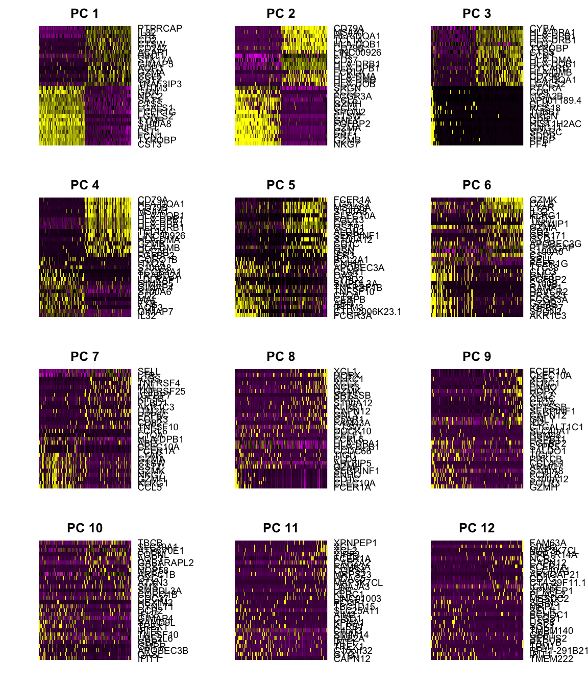
Another approach is the jackstraw plot, which compares the distribution of p-values for each principle component with a uniform distribution. ‘Significant’ PCs show an enrichment of genes with low p-values.
pbmc <- JackStraw(object = pbmc,
num.replicate = 100,
do.print = FALSE)
JackStrawPlot(object = pbmc, PCs = 1:12)Finally, we can generate an ‘elbow plot’ of the standard deviation of the principle components. The ‘elbow’ indicated the last significant principle component.
PCElbowPlot(object = pbmc)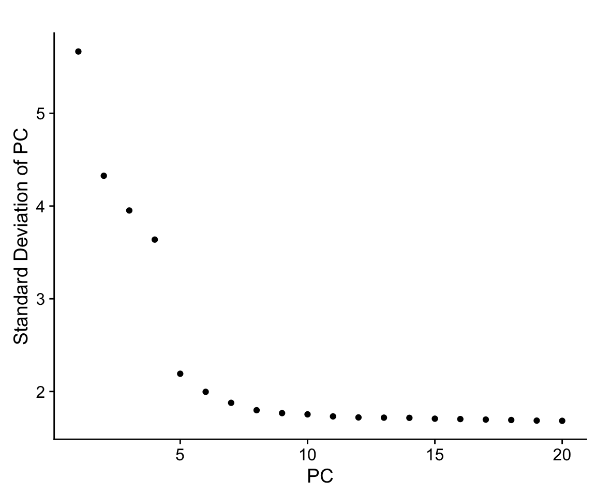
Based on these plots, we conclude that the first 7-10 PCs contain sufficient variation for use downstream.
Now that we’ve identified the ‘true dimensionality’ of the data, we can cluster the cells and project them on a tSNE plot.
pbmc <- FindClusters(object = pbmc,
reduction.type = "pca",
dims.use = 1:10,
resolution = 0.6,
print.output = 0,
save.SNN = TRUE)
pbmc <- RunTSNE(object = pbmc,
dims.use = 1:10,
do.fast = TRUE)
TSNEPlot(object = pbmc)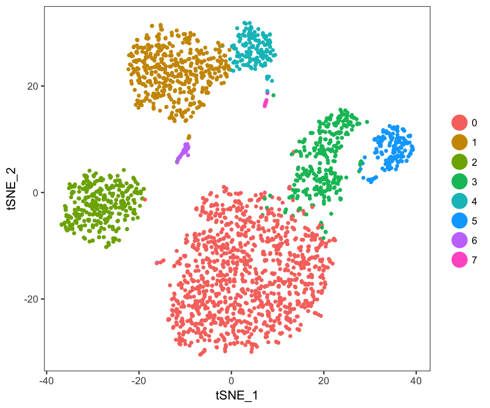
Clustering reveals seven distinct populations that are accurately separated in the tSNE projection - substantially more complexity than was captured in the PCA plot!
Seurat provides the FindAllMarkers and FindMarkers functions for identifying differentially expressed genes in all clusters vs. all other clusters and in specific pairs of clusters, respectively.
pbmc.markers <- FindAllMarkers(object = pbmc,
only.pos = TRUE,
min.pct = 0.25,
thresh.use = 0.25)
pbmc.markers %>%
group_by(cluster) %>%
top_n(2, avg_diff)
#> # A tibble: 16 x 6
#> # Groups: cluster [8]
#> p_val avg_diff pct.1 pct.2 cluster gene
#> <dbl> <dbl> <dbl> <dbl> <fctr> <chr>
#> 1 9.480623e-268 1.149058 0.924 0.483 0 LDHB
#> 2 3.519020e-133 1.068122 0.662 0.202 0 IL7R
#> 3 0.000000e+00 3.827593 0.996 0.216 1 S100A9
#> 4 0.000000e+00 3.786535 0.973 0.123 1 S100A8
#> 5 0.000000e+00 2.977399 0.936 0.042 2 CD79A
#> 6 1.030004e-191 2.492236 0.624 0.022 2 TCL1A
#> 7 3.158793e-231 2.158812 0.974 0.230 3 CCL5
#> 8 4.103013e-125 2.113428 0.588 0.050 3 GZMK
#> 9 1.304430e-165 2.151881 1.000 0.316 4 LST1
#> 10 1.420369e-138 2.275509 0.962 0.137 4 FCGR3A
#> 11 1.127318e-215 3.763928 0.961 0.131 5 GNLY
#> 12 8.182907e-187 3.334634 0.955 0.068 5 GZMB
#> 13 3.261141e-48 2.729243 0.844 0.011 6 FCER1A
#> 14 7.655042e-30 1.965168 1.000 0.513 6 HLA-DPB1
#> 15 1.165274e-56 5.889503 1.000 0.023 7 PPBP
#> 16 3.238887e-44 4.952160 0.933 0.010 7 PF4Differentially expressed genes can be visualized as violin plots:
VlnPlot(object = pbmc,
features.plot = c("LDHB", "CD79A"))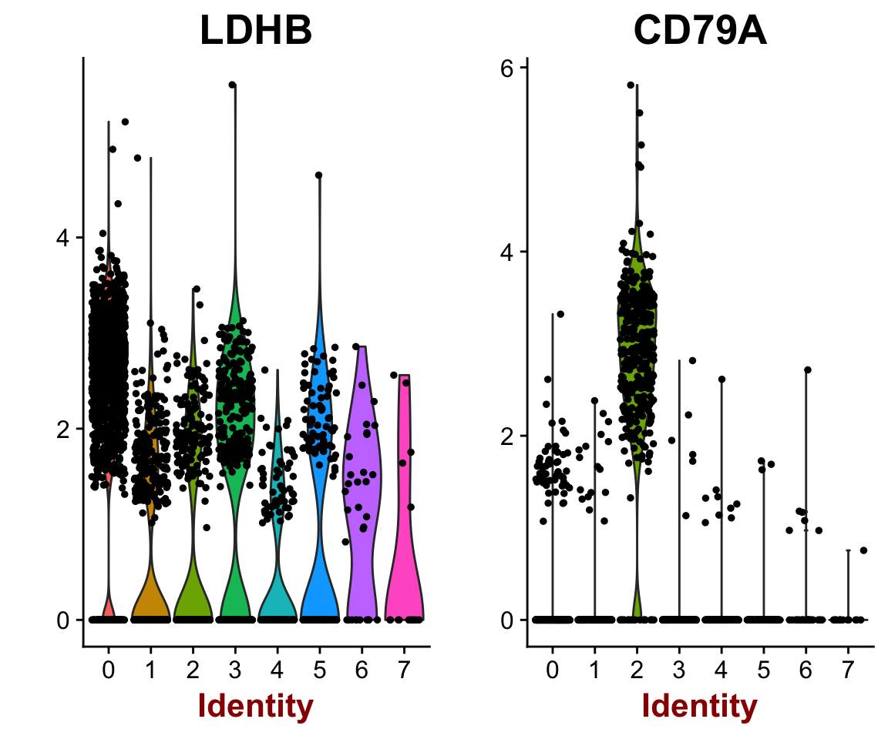
Or as ‘feature plots’ on the tSNE projection:
FeaturePlot(object = pbmc,
features.plot = c("MS4A1",
"GNLY",
"CD3E",
"CD14",
"FCER1A",
"FCGR3A",
"LYZ",
"PPBP",
"CD8A"),
cols.use = c("grey", "blue"),
reduction.use = "tsne")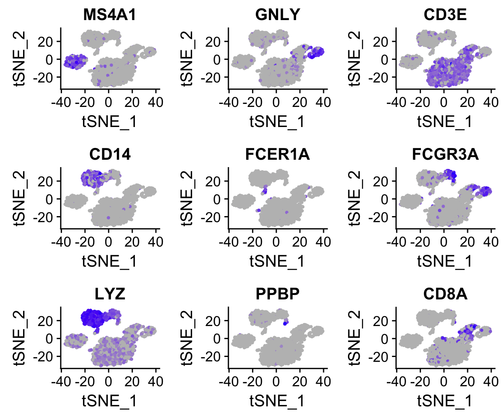
The marker genes identified above can be used to reclassify clusters as known cell types. This provides a useful example of how metadata is handled in Seurat.
# Create a vector of current cluster IDs
current.cluster.ids <- c(0, 1, 2, 3, 4, 5, 6, 7)
# Create a vector of new cluster IDs (cell types)
new.cluster.ids <- c("CD4 T cells",
"CD14+ Monocytes",
"B cells",
"CD8 T cells",
"FCGR3A+ Monocytes",
"NK cells",
"Dendritic cells",
"Megakaryocytes")
# Save the cluster numbers as "cluster.id"
pbmc <- StashIdent(object = pbmc, save.name = "cluster.id")
# Use plyr to remap the idents from the current IDs to the new IDs
pbmc@ident <- plyr::mapvalues(x = pbmc@ident,
from = current.cluster.ids,
to = new.cluster.ids)
# Plot the tSNE with new cluster IDs
TSNEPlot(object = pbmc,
do.label = TRUE,
pt.size = 0.5)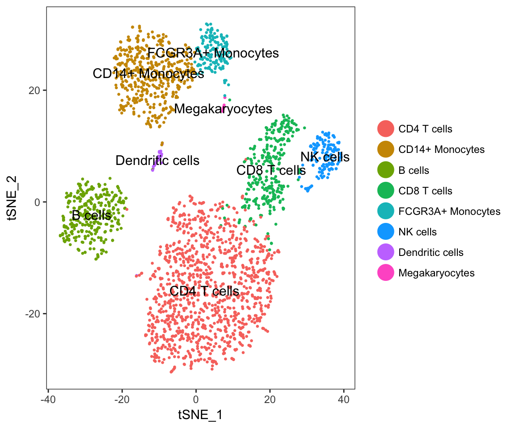
# Plot the tSNE with old cluster IDs
TSNEPlot(object = pbmc,
do.label = TRUE,
pt.size = 0.5,
group.by = "cluster.id")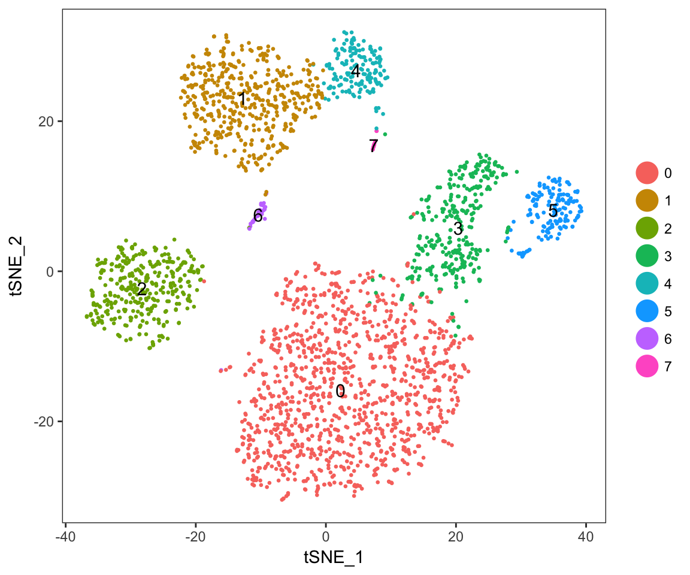
PBMCs are poor examples for this analysis, but the commands are shown here to demonstrate how other, more complex variables are regressed out of these analyses.
# Inspect the classifying genes
cc.genes
#> $s.genes
#> [1] "MCM5" "PCNA" "TYMS" "FEN1" "MCM2" "MCM4"
#> [7] "RRM1" "UNG" "GINS2" "MCM6" "CDCA7" "DTL"
#> [13] "PRIM1" "UHRF1" "MLF1IP" "HELLS" "RFC2" "RPA2"
#> [19] "NASP" "RAD51AP1" "GMNN" "WDR76" "SLBP" "CCNE2"
#> [25] "UBR7" "POLD3" "MSH2" "ATAD2" "RAD51" "RRM2"
#> [31] "CDC45" "CDC6" "EXO1" "TIPIN" "DSCC1" "BLM"
#> [37] "CASP8AP2" "USP1" "CLSPN" "POLA1" "CHAF1B" "BRIP1"
#> [43] "E2F8"
#>
#> $g2m.genes
#> [1] "HMGB2" "CDK1" "NUSAP1" "UBE2C" "BIRC5" "TPX2" "TOP2A"
#> [8] "NDC80" "CKS2" "NUF2" "CKS1B" "MKI67" "TMPO" "CENPF"
#> [15] "TACC3" "FAM64A" "SMC4" "CCNB2" "CKAP2L" "CKAP2" "AURKB"
#> [22] "BUB1" "KIF11" "ANP32E" "TUBB4B" "GTSE1" "KIF20B" "HJURP"
#> [29] "CDCA3" "HN1" "CDC20" "TTK" "CDC25C" "KIF2C" "RANGAP1"
#> [36] "NCAPD2" "DLGAP5" "CDCA2" "CDCA8" "ECT2" "KIF23" "HMMR"
#> [43] "AURKA" "PSRC1" "ANLN" "LBR" "CKAP5" "CENPE" "CTCF"
#> [50] "NEK2" "G2E3" "GAS2L3" "CBX5" "CENPA"
# Classify the cells
pbmc <- CellCycleScoring(pbmc,
s.genes = cc.genes$s.genes,
g2m.genes = cc.genes$g2m.genes,
set.ident = TRUE)
# view cell cycle scores and phase assignments
head(x = pbmc@meta.data)
#> nGene nUMI orig.ident percent.mito res.0.6 cluster.id
#> AAACATACAACCAC 781 2421 10x_PBMC 0.030177759 0 0
#> AAACATTGAGCTAC 1352 4903 10x_PBMC 0.037935958 2 2
#> AAACATTGATCAGC 1131 3149 10x_PBMC 0.008897363 0 0
#> AAACCGTGCTTCCG 960 2639 10x_PBMC 0.017430845 1 1
#> AAACCGTGTATGCG 522 981 10x_PBMC 0.012244898 5 5
#> AAACGCACTGGTAC 782 2164 10x_PBMC 0.016643551 0 0
#> S.Score G2M.Score Phase old.ident
#> AAACATACAACCAC 0.088671114 -0.03096637 S CD4 T cells
#> AAACATTGAGCTAC -0.028912641 -0.04570735 G1 B cells
#> AAACATTGATCAGC -0.007559156 0.07088689 G2M CD4 T cells
#> AAACCGTGCTTCCG 0.033761944 0.02260974 S CD14+ Monocytes
#> AAACCGTGTATGCG -0.042941375 0.04006888 G2M NK cells
#> AAACGCACTGGTAC -0.040543204 -0.07054163 G1 CD4 T cells# Cell cycle stage can then be regressed out using `Scale Data`
pbmc <- ScaleData(pbmc,
vars.to.regress = c("S.Score", "G2M.Score"),
display.progress = FALSE)
# Alternatively, retain cycling vs. stationary information, but regress out differences in phase
pbmc@meta.data$CC.Difference <- pbmc@meta.data$S.Score - pbmc@meta.data$G2M.Score
pbmc <- ScaleData(pbmc,
vars.to.regress = "CC.Difference",
display.progress = FALSE)